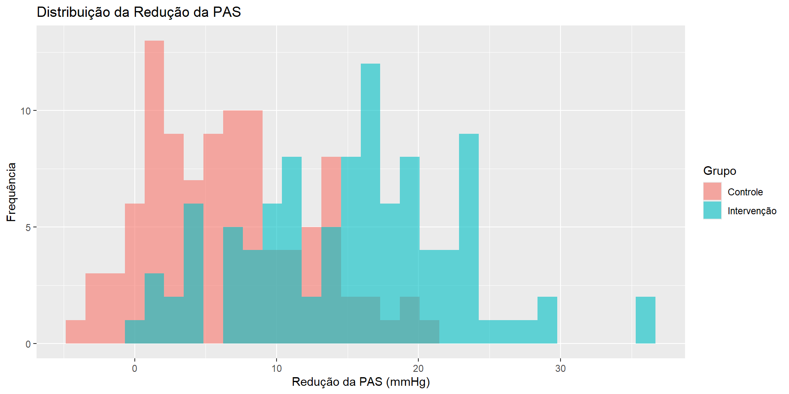

Um grupo de pesquisadores realizou um ensaio clínico randomizado, duplo-cego e controlado por placebo para avaliar a eficácia do captopril na redução da pressão arterial sistólica (PAS) em pacientes com hipertensão estágio 2.
Foram recrutados 200 pacientes, randomizados em dois grupos:
Grupo Intervenção (Captopril): 100 pacientes
Grupo Controle (Placebo): 100 pacientes
Descrição do ensaio clínico
Os pesquisadores coletaram os seguintes dados após 12 semanas de tratamento:
Redução da PAS (mmHg) – variável contínua
Idade (anos) – variável contínua
Índice de Massa Corporal (IMC, kg/m²) – variável contínua
Presença de Diabetes (Sim/Não) – variável categórica
Uso prévio de anti-hipertensivos (Sim/Não) – variável categórica
Eventos adversos (Sim/Não) – variável categórica
Objetivos
Explorar os dados sobre a eficácia do captopril na redução da pressão arterial sistólica (PAS) em pacientes com hipertensão estágio 2.
Verificar a eficácia do captopril na redução da pressão arterial sistólica (PAS) em pacientes com hipertensão estágio 2
Verificar se a ocorrência de eventos adversos difere entre os grupos.
Preparação
Carregando os pacotes R
pacman::p_load( rio, # importa arquivos here, # localiza arquivos skimr, # gera visualização dos dados tidyverse, # gestão dos dados + gráficos no ggplot2 gtsummary, # resumo estatísticos e testes rstatix, # resumo e testes estatísticos janitor, # adiciona números absolutos e porcentagens às tabelas scales, # facilmente converte proporções para porcentagens flextable, # converte tabelas para o formato de imagens descriptr, # construir tabela de distribuição de frequência em classes car, # aplicação do teste de Levene para homogeneidade de variâncias BSDA # aplicação do teste z para comparação de médias )
# A tibble: 2 × 3
Grupo Media_Red_PAS DP_Red_PAS
<chr> <dbl> <dbl>
1 Controle 6.61 5.59
2 Intervenção 15.3 7.43
Explorando os dados sobre a eficácia do captopril na redução da pressão arterial sistólica (PAS)
dados_brutos %>%ggplot(aes(x=Redução_PAS_mmHg, fill=Grupo)) +geom_histogram(alpha=0.6, position="identity", bins=30) +labs(title="Distribuição da Redução da PAS", x="Redução da PAS (mmHg)", y="Frequência")

Verificando a eficácia do captopril na redução da pressão arterial sistólica (PAS) em pacientes com hipertensão
\(H_0:\) a variável de interesse é oriunda de uma população com distribuição normal;
\(H_a:\) a variável de interesse não é oriunda de uma população com distribuição normal.
Two-sample z-Test
data: captopril and placebo
z = 9.3053, p-value < 2.2e-16
alternative hypothesis: true difference in means is greater than 0
95 percent confidence interval:
7.123878 NA
sample estimates:
mean of x mean of y
15.259091 6.605576
Verificando se a ocorrência de eventos adversos difere entre os grupos.
Grupo 0 1 Total
Controle 93 7 100
Intervenção 86 14 100
Total 179 21 200
\(H_0:\) A proporção de pacientes que tiveram eventos adversos ao tomar captopril é igual à proporção de pacientes que tiveram eventos adversos ao tomar placebo
Um ensaio clínico randomizado foi conduzido para avaliar o impacto do empagliflozina (um inibidor de SGLT2) na redução do risco cardiovascular em pacientes com diabetes tipo 2.
O estudo incluiu 800 participantes, randomizados para dois grupos:
Grupo Empagliflozina (n=400): Receberam empagliflozina em conjunto com tratamento padrão.
Grupo Controle (n=400): Receberam apenas o tratamento padrão.
Descrição do ensaio clínico
Desfecho primário: Ocorrência de evento cardiovascular maior (infarto, AVC ou morte cardiovascular).
Os pacientes foram acompanhados por 4 anos, e múltiplas variáveis contínuas e categóricas foram coletadas.
Descrição das Variáveis
Grupo: “Empagliflozina” ou “Controle”.
Sexo: “Masculino” ou “Feminino”.
Faixa Etária: “40-50”, “51-60” ou “>60” anos.
Hipertensão: 1 = hipertensão prévia, 0 = sem hipertensão.
Uso de Estatina: 1 = sim, 0 = não.
HbA1c Inicial (%): Nível inicial de hemoglobina glicada.
Redução HbA1c (%): Queda no nível de HbA1c ao longo do estudo.
IMC Inicial (kg/m²): Índice de massa corporal no início do estudo.
Redução IMC (kg/m²): Mudança no IMC após 4 anos.
Evento Cardiovascular: 1 = infarto, AVC ou morte cardiovascular; 0 = sem evento.
Objetivos
Explorar os dados sobre a eficácia do empagliflozina na redução do risco cardiovascular em pacientes com diabetes tipo 2.
Verificar se a ocorrência de eventos cardiovasculares difere entre os grupos.
Verificar se existe associação entre o uso de Estatina e a ocorrência de eventos cardiovasculares.
Verificar a eficácia do empagliflozina na redução do nível de HbA1c.
Verificar a eficácia do empagliflozina na redução do IMC dos pacientes.